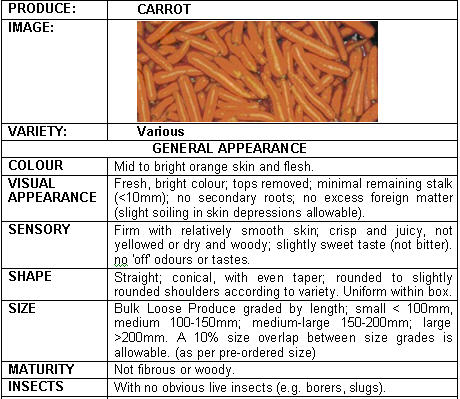

{kind=link}
{kind=link}
{kind=link}
{kind=link}
General Information and Agronomic Aspects
Carrot is a popular vegetable with high vitamin A content, grown in East Africa mostly in the cooler highlands. The roots are consumed raw or cooked, alone or in combination with other vegetables (for example, peas), as an ingredient of soups, sauces and in dietary compositions. Young leaves are sometimes eaten raw or used as fodder. Carrots are an important source of vitamin A in human diets. Vitamin A deficiency can lead to blindness and especially for children to a greater risk of dying from ailments such as measles, diarrhoea or malaria.
Nutritive value per 100 g of edible portion
| Raw or Cooked Carrot | Food Energy (Calories / %Daily Value*) | Carbohydrates (g / %DV) | Fat (g / %DV) | Protein (g / %DV) | Calcium (g / %DV) | Phosphorus (mg / %DV) | Iron (mg / %DV) | Potassium (mg / %DV) | Vitamin A (I.U) | Vitamin C (I.U) | Vitamin B 6 (I.U) | Vitamin B 12 (I.U) | Thiamine (mg / %DV) | Riboflavin (mg / %DV) | Ash (g / %DV) |
| Carrot raw | 41.0 / 2% | 9.6 / 3% | 0.2 / 0% | 0.9 / 2% | 33.0 / 3% | 35.0 / 4% | 0.3 / 2% | 320 / 9% | 16705 IU / 334% | 5.9 / 10% | 0.1 / 7% | 0.0 / 0% | 0.1 / 4% | 0.1 / 3% | 1.0 |
| Carrot cooked | 35.0 / 2% | 8.2 / 3% | 0.2 / 0% | 0.8 / 2% | 30.0 / 3% | 30.0 / 3% | 0.3 / 2% | 235 / 7% | 17036 IU / 341% | 3.6 / 6% | 0.2 / 8% | 0.0 / 0% | 0.1 / 4% | 0.0 / 0% | 0.7 |
*Percent Daily Values (DV) are based on a 2000 calorie diet. Your daily values may be higher or lower, depending on your calorie needs.
Climatic conditions, soil and water management
Carrots can grow under a range of climatic conditions, but they perform best under moderate temperatures. They are mostly cultivated as a cool season crop. Seed germination occurs between 7degC and 30degC. Optimum air temperatures are 16-24degC. Soil temperatures above 25degC may reduce root quality, including root colour. High temperatures can cause burning of young seedlings. For economic yields, carrots should be grown in tropical regions at altitudes above 700 m. Early-maturing carrot cultivars may grow in the lowlands, but yields will be low and roots will have a poor colour.
Carrots grow best in a well-drained friable loam free of stones and hard soil clods. It is a short season crop of 2-3 months with the potential of high yields for family food security and fresh market sales. It does well in the cooler areas of Kenya under both rainfed and irrigated conditions.
Propagation and planting
Carrots are propagated by seeds. Seeds are sown, often mixed with sand, 1/2 - 1 cm deep in drills 10-15 cm apart in finely prepared soils previously cultivated to a depth of at least 30 cm. Lightly aerate the soil by shallow digging before sowing carrots or sow them in ridge culture (small dams of 10 to 20 cm height) to facilitate mechanical weeding, thinning, and to limit soil borne diseases. In addition, this will allow easier penetration by the carrot root and will also improve water holding capacity.
Seedlings are thinned to 5-8 cm in the rows. Seed requirements (200 plants/m2 and 70% germination) for the dominant half-long carrot cultivars used in Asia, are 4-5 kg/ha. For bigger carrots, the density may be reduced to about 100 plants/m2.
Examples of Varieties
| "Chantenay" | Fresh market and canning |
| "Nantes" | Fresh market |
| "Amsterdam forcing" | Fresh market variety |
| "Little finger" | Suitable for canning |
| "Nebula F1" | Fresh market |
| "Touchon" | Fresh market |
Carrots that bolt (produce seed) in between normal carrots should be pulled out and fed to livestock. Seed produced this way will not produce good quality carrots. Seed production under tropical highland (above 1200 m) conditions is possible by selecting and harvesting the best quality mature carrot roots and replanting them separately in a corner of the field. Bolting and seed setting soon follows.
Husbandry
Crop rotation is essential to reduce soil-borne diseases and pests. Mulching (rice straw or dried grass) after sowing is recommended to encourage germination. Seedlings may be earthed-up when roots start swelling to keep them cool and prevent green tops. Temperature of 15 to 20degC is optimal for seed development. In hot weather, light overhead shade is beneficial. Under such conditions carrots grow well under the canopy of fruit trees. Irrigation during dry spells is necessary to prevent irregular root development. Nutrient requirements of carrots are particularly high for potassium (200-300 kg/ha) and low to medium for nitrogen (0-90 kg/ha). Carrots are sensitive to high Chlorine concentrations and more susceptible to diseases at very high soil pH. Liming is recommended when pH is below 5.5. Well-decomposed organic manures are beneficial when applied moderately (10-20 t/ha). Fresh organic matter such as farmyard manure or manure from a leguminous crop can induce forked roots, which are difficult to clean and to market.
Young carrot seedlings are weak and grow slowly. Therefore, it is essential to keep weeds under control for the first few weeks after germination. Cultivate shallowly with a hoe.
Deep cultivation may injure the roots. Weeding and thinning of young plants can be very labour intensive, for which reason most families grow fairly small beds at any one time.
Intercropping
Because of their limited space requirements and early growing habits, carrots are ideal for intercropping between other crops such as tomatoes, lettuce or capsicums and because of their fragrant leaves can help keep pest levels low. Other crops good for intercropping with carrots include garlic, dwarf bean, onion, parsnip, leek, small peas, pea mange-tout (snow peas), and radish. The most profitable example of an association is that of carrots and leeks. Carrots have very deep roots that extract nutrients deep in the soil, whereas leeks have extremely superficial roots, which help the crop to extract nutrients near the soil surface. Moreover, carrots can drive away worms from leeks, while leeks can drive away flies from the carrots (TOF No. 8, page 8).
Harvesting
Carrots are mostly harvested manually by pulling up the roots at the leaves as long as the soil is moist and soft. If the soil has dried, it will be necessary to use either a spade or similar tool to loosen the soil and harvest the roots. Carrots are usually ready for harvesting 60-85 days after sowing. Mature roots should be orange-coloured internally down to the blunt tip.
A good market price can be fetched from young carrots with a fresh top, but leaving the top on dries out the root quickly and reduces the marketing period of the crop. An alternative is to trim the top back to about 2 cm and package attractively.
For mature carrots the tops are trimmed down completely to avoid storage rots before marketing. Carrots can remain in good condition for 100-150 days when the foliage is removed and they are stored at 1-4deg C with 95-100% relative humidity. Carrots should be stored separately from other vegetables to prevent a bitter flavour induced by ethylene (a colourless gas with a sweet odour that is produced by many fruits and vegetables that accelerates the ripening process). Generally carrots store better when they are mature and harvested under moist conditions, and undamaged and free of diseases and pests.
Fresh Quality Specifications for the Market in Kenya
|  |
| (c) S. Kahumbu, Kenya |